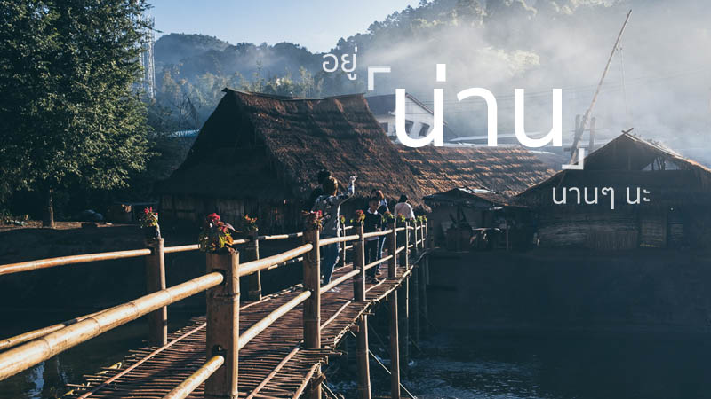


 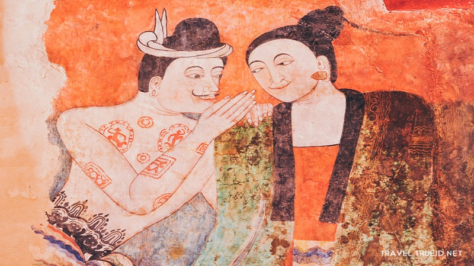
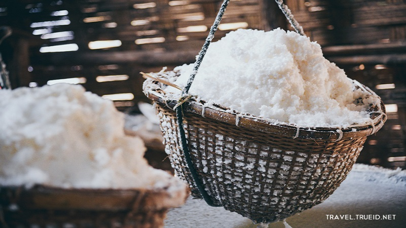
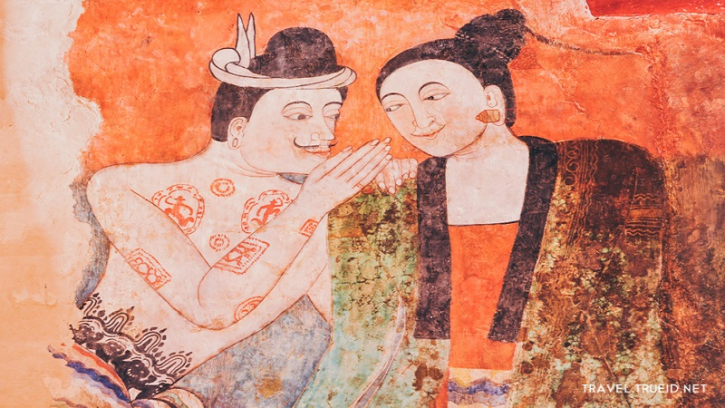
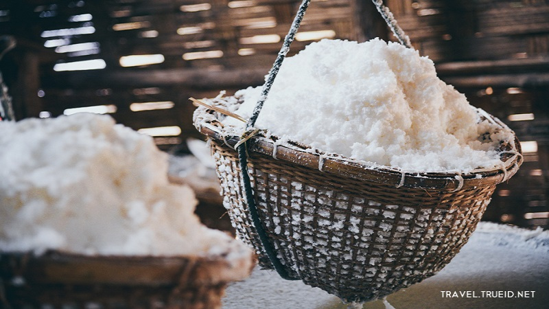
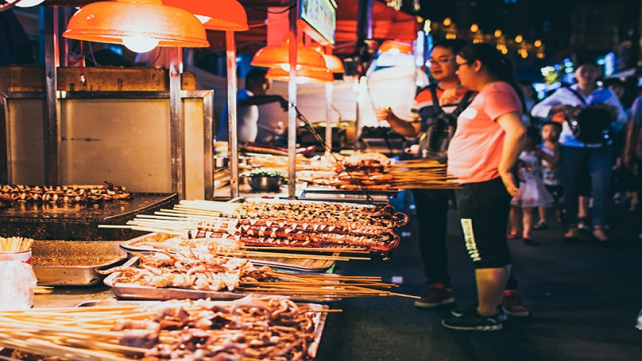
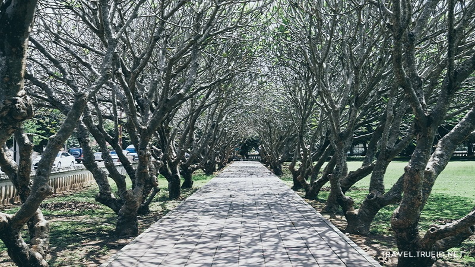
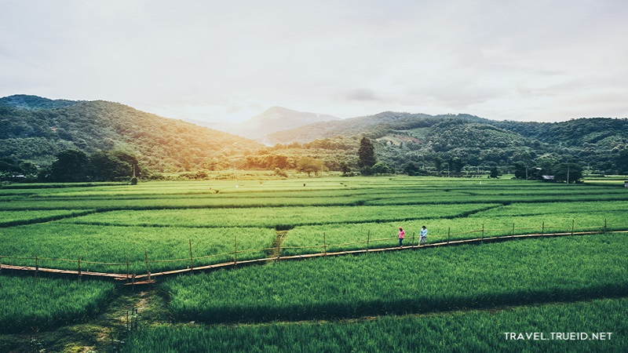
![หอศิลป์ริมน่าน สัมผัสกับกลิ่นอายความเป็นล้านนา พักผ่อนแบบสโลว์ไลฟ์ ด้วยการไปเสพศิลป์ที่ หอศิลป์ริมน่าน สถานที่ที่คนรักศิลปะห้ามพลาดอย่างเด็ดขาด หอศิลป์ริมน่านก่อตั้งโดย วินัย ปราบริปู ศิลปินชาวน่านชื่อดังที่รักในศิลปะ
ภายในรวบรวมงานศิลปะของศิลปินไทยร่วมสมัยที่มีผลงานการสร้างสรรค์และรูปแบบที่มีเอกลักษณ์โดดเด่น โดยจะหมุนเวียนกันไปตลอดทั้งปี รวมถึงจัดแสดงนิทรรศการงานศิลปะของคุณวินัย ปราบริปู ไว้ด้วย ซึ่งไฮลท์ที่ห้ามพลาดคือ ภาพฝีพระหัตถ์สมเด็จพระเทพรัตนราชสุดาฯ สยามบรมราชกุมารี ที่ทรงเขียนพระราชทานไว้ที่หอศิลป์ริมน่านแห่งนี้](nan6.jpg)

 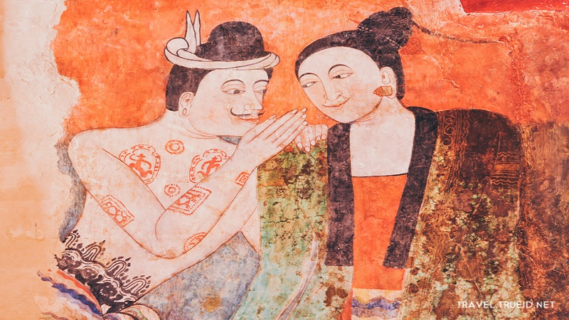
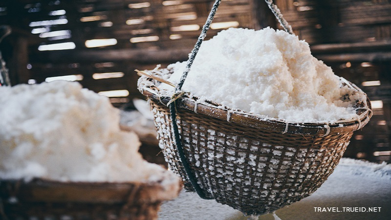
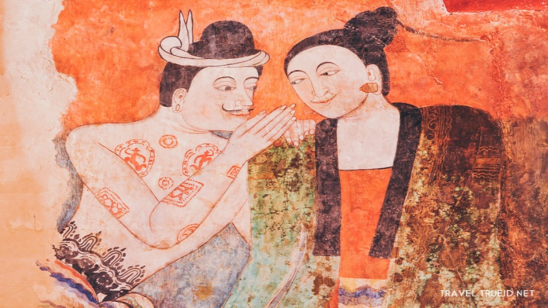
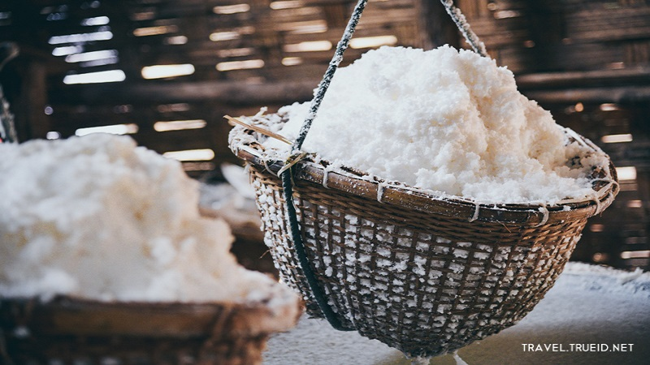